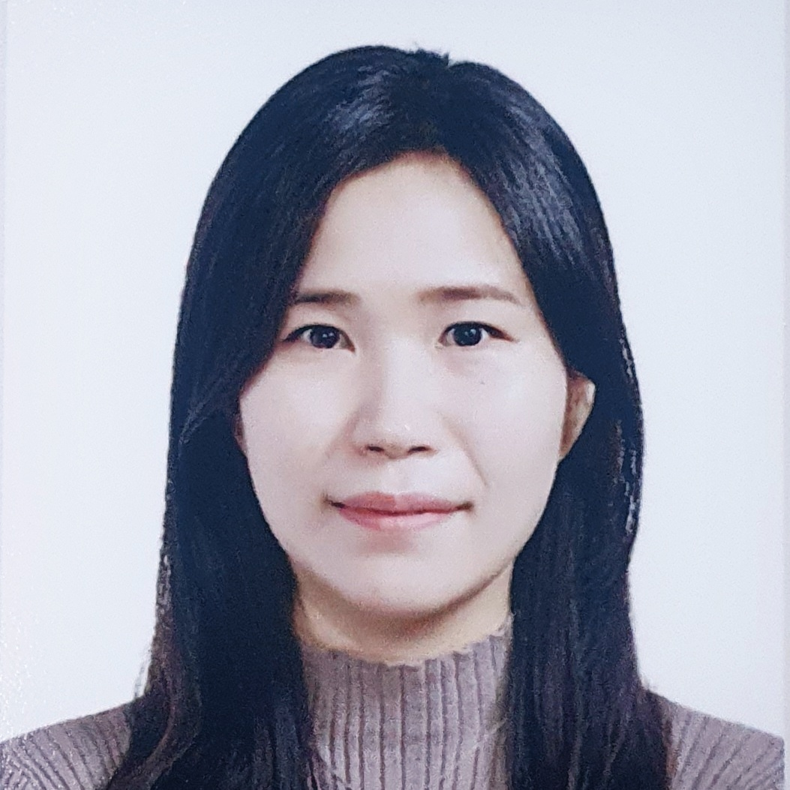

Seonghoon Yu, Dongjun Nam, Byung-Kwan Lee+, Jeany Son+ (+corresponding authors)
Preprint
Junbeom Hong*, Seonghoon Yu*, Hyung Rok Jung, Sundong Kim, Jeany Son (*equal contribution)
Findings of EMNLP 2026
Jinsoo Park, Donggyu Choi, Ahyun Seo, Minsu Cho, Jeany Son
ECCV 2026
Yeonghwan Song, Chanhui Lee, Jinsoo Park, Jeany Son
ECCV 2026
Chanhui Lee, Donggyu Choi, Seunghyun Shin, Hae-Gon Jeon, Jeany Son
ECCV 2026
Daeyoung Han, Hyung Rok Jung, Tianhong Li, Dina Katabi, Jeany Son, Hong kook Kim, Moongu Jeon
Neurocomputing 2026
Seonghoon Yu*, Dongjun Nam*, Dina Katabi, Jeany Son (*equal contribution)
NeurIPS 2025
Seonghoon Yu, Junbeom Hong, Joonseok Lee, Jeany Son
ICCV 2025
Hyung Rok Jung*, Daneul Kim*, Seunggyun Lim, Jeany Son+, Jonghyun Choi+ (*equal contribution, +corresponding authors)
ICCV 2025
Chanhui Lee, Yeonghwan Song, Jeany Son
CVPR 2025
Seonghoon Yu, Paul Hongsuck Seo+, Jeany Son+ (+corresponding authors)
ECCV 2024
Kaiwen Zha*, Peng Cao*, Jeany Son, Yuzhe Yang, Dina Katabi (*equal contribution)
NeurIPS 2023 (Spotlight)
Yeonghwan Song, Seokwoo Jang, Dina Katabi, Jeany Son
ICCV 2023
Seonghoon Yu, Paul Hongsuck Seo, Jeany Son
CVPR 2023
Jeany Son
CVPR 2022
Jaedong Hwang*, Seohyun Kim*, Jeany Son, Bohyung Han (*equal contribution)
WACV 2021
Jeany Son, Daniel Kim, Solae Lee, Suha Kwak, Minsu Cho, Bohyung Han
ACCV 2018 (oral)
Ilchae Jung, Jeany Son, Mooyeol Baek, Bohyung Han
ECCV 2018
Jeany Son, Mooyeol Baek, Minsu Cho, Bohyung Han
CVPR 2017
Donghun Yeo, Jeany Son, Bohyung Han, Joonhee Han
CVPR 2017
Jeany Son, Ilchae Jung, Kayoung Park, Bohyung Han
ICCV 2015
Jan Feyereisl, Suha Kwak, Jeany Son, Bohyung Han
NIPS 2014
Chang-Kyu Song, Jeany Son, Suha Kwak, Bohyung Han
BMVC 2011
Soo-Min Song, Jeany Son, Myoung-Hee Kim
ISVC 2010
Jeany Son, Soo-Min Song, Su-Ho Lee, Sung-Hoe Chang, Myoung-Hee Kim
Journal of Microscopy, Vol.241, No.3, 2010